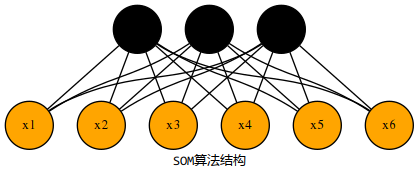
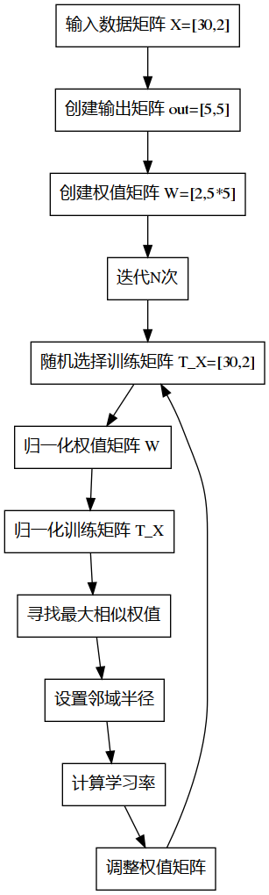

som算法
相比于bp神经网络算法，som相对来说比较容易理解。自组织神经网络，是一种用于聚类的神经网络算法，从名字便可以看出，这是一种无监督式的算法，意味着，它不需要任何训练样本，便可以直接对输入样本根据其特征分类，将具有相似特征的划分为一类。
算法结构
som算法由两层网络组成，输入层与输出层(竞争层)，如图下所示：
输入层
负责接收外界信息，将输入模式向竞争层传递，起“观察”作用。
竞争层
负责对输入模式进行“分析比较”，寻找规律并归类。

1.向量归一化
对自组织网络中的当前输入模式向量\(X_i(i=1,2,...n)\)、随机生成输出层神经元\(w_j(j=1,2,...m)\)，全部进行归一化处理,得到\(\hat{X_i}\)和\(\hat{W_j}\):
\[ \begin{aligned} \hat{X_i}=\frac{X_i}{||X_i||}\ \ ,\ \ \hat{W_j}=\frac{W_j}{||W_j||} \end{aligned} \]
2.寻找获胜神经元
将\(\hat{X_i}\)和\(\hat{W_j}\)进行相似性对比，设获胜神经元矩阵为\(Win\)：
- 基于距离的相似性对比 例如在二维情况下，利用欧式距离做相似性对比。 \[ \begin{aligned} Win_j=min\{||\hat{X}_{i(i=1,2,...n)}-\hat{W_j}||\}\ \ \ \ (j=1,2,...m) \end{aligned} \]
- 基于方向的相似性对比 利用矩阵的空间性质，夹角越小，余弦越大做相似性对比。 \[ \begin{aligned} Win_j=max\{\hat{X_i}*\hat{W_j}\} \end{aligned} \]
3.网络输出与权调整
按照Winner take all的学习法则，获胜的神经元可以调整其权值: \[ \begin{aligned}
Win_j(t+1)=\hat{Win_j}(t)+\eta(t)(\hat{X_i}-\hat{Win_j})\ \ \ \ 0<\eta(t)\leq1
\end{aligned} \]
4.循环迭代
先将上一步中的学习率按照梯度下降的缩减 \[ \begin{aligned} \eta(t)=\eta(t)e^{-N} \end{aligned} \]
接着进行循环进行第一步。当梯度小于某个临界点，或者\(N\)大于某个临界值时结束。
优缺点分析
- 网络结构是固定的,不能动态改变
- 网络训练时,有些神经元始终不能获胜,成为“死神经元”
- SOM 网络在没有经过完整的重新学习之前,不能加入新的类别
- 当输入数据较少时,训练的结果通常依赖于样本的输入顺序
- 网络连接权的初始状态、算法中的参数选择对网络的收敛性能有较大影响。
实例
流程

代码
import numpy as np
import pylab as pl
class SOM(object):
def __init__(self, X, output, iteration, batch_size):
"""
:param X: 形状是N*D， 输入样本有N个,每个D维
:param output: (n,m)一个元组，为输出层的形状是一个n*m的二维矩阵
:param iteration:迭代次数
:param batch_size:每次迭代时的样本数量
初始化一个权值矩阵，形状为D*(n*m)，即有n*m权值向量，每个D维
"""
self.X = X # 30 行 2 列 => 30个数据 2个参数
self.output = output # 输出 5x5 的矩阵
self.iteration = iteration # 迭代次数
self.batch_size = batch_size # 迭代时的样本数量 30
self.W = np.random.rand(
X.shape[1], output[0] * output[1]) # 权值矩阵 2行 25 列，
print("W mat shape is", self.W.shape)
def GetN(self, t):
"""
:param t:时间t, 这里用迭代次数来表示时间
:return: 返回一个整数，表示拓扑距离，时间越大，拓扑邻域越小
"""
a = min(self.output) # 选取输出矩阵中最小的值
return int(a-float(a)*t/self.iteration) # a减去迭代次数的百分比
def Geteta(self, t, n):
"""
:param t: 时间t, 这里用迭代次数来表示时间
:param n: 拓扑距离
:return: 返回学习率，
"""
return np.power(np.e, -n)/(t+2)
def updata_W(self, X, t, winner):
"""
用于更新权值矩阵
"""
N = self.GetN(t) # 设置邻域半径
for x, i in enumerate(winner): # 获取winner的各个值
to_update = self.getneighbor(i[0], N) # i(0)就是当前的winner元素
for j in range(N+1):
e = self.Geteta(t, j)
for w in to_update[j]:
self.W[:, w] = np.add(
self.W[:, w], e*(X[x, :] - self.W[:, w]))
def getneighbor(self, index, N):
"""
:param index:获胜神经元的下标
:param N: 邻域半径
:return ans: 返回一个集合列表，分别是不同邻域半径内需要更新的神经元坐标
"""
a, b = self.output
length = a*b # 获得输出矩阵的长度
def distence(index1, index2):
i1_a, i1_b = index1 // a, index1 % b
i2_a, i2_b = index2 // a, index2 % b
return np.abs(i1_a - i2_a), np.abs(i1_b - i2_b)
# 创建N+1个集合
ans = [set() for i in range(N+1)]
for i in range(length):
# 求每一个元素与index的距离
dist_a, dist_b = distence(i, index)
if dist_a <= N and dist_b <= N: # 若小于邻域半径
ans[max(dist_a, dist_b)].add(i) # ans添加数据
return ans
def train(self):
"""
train_Y:训练样本与形状为batch_size*(n*m)
winner:一个一维向量，batch_size个获胜神经元的下标
:return:返回值是调整后的W
"""
count = 0 # 迭代次数计数器
while self.iteration > count:
# 开始
# 从X的总数中随机选择 batch_size 个数做训练
train_X = self.X[np.random.choice(
self.X.shape[0], self.batch_size)]
# 归一化 权值矩阵
normal_W(self.W)
# 归一化 训练矩阵
normal_X(train_X)
# 训练矩阵[30,2]与权值矩阵[2,25]相乘
train_Y = train_X.dot(self.W) # train_Y 为 [30,25]
# 这里的相似度判别使用的是余弦法，方向越接近，值越接近1
winner = np.argmax(train_Y, axis=1).tolist() # 找到每行中最大元素下标
# 更新权值矩阵
self.updata_W(train_X, count, winner)
count += 1
return self.W
def train_result(self):
normal_X(self.X) # 归一化数据矩阵
train_Y = self.X.dot(self.W) # 输出矩阵为 数据矩阵与权值矩阵叉乘所得
# train_Y 为 [30,25]
winner = np.argmax(train_Y, axis=1).tolist() # 在30行中找到每行最大的元素
print(winner)
return winner
def normal_X(X):
"""
:param X:二维矩阵，N*D，N个D维的数据
:return: 将X归一化的结果
"""
N, D = X.shape
for i in range(N):
temp = np.sum(np.multiply(X[i], X[i]))
X[i] /= np.sqrt(temp)
return X
def normal_W(W):
"""
:param W:二维矩阵，D*(n*m)，D个n*m维的数据
:return: 将W归一化的结果
"""
for i in range(W.shape[1]):
temp = np.sum(np.multiply(W[:, i], W[:, i]))
W[:, i] /= np.sqrt(temp)
return W
# 画图
def draw(C):
colValue = ['r', 'y', 'g', 'b', 'c', 'k', 'm']
for i in range(len(C)):
coo_X = [] # x坐标列表
coo_Y = [] # y坐标列表
for j in range(len(C[i])):
coo_X.append(C[i][j][0])
coo_Y.append(C[i][j][1])
pl.scatter(coo_X, coo_Y, marker='x',
color=colValue[i % len(colValue)], label=i)
pl.legend(loc='upper right')
pl.show()
# 数据集：每三个是一组分别是西瓜的编号，密度，含糖量
data = """
1,0.697,0.46,2,0.774,0.376,3,0.634,0.264,4,0.608,0.318,5,0.556,0.215,
6,0.403,0.237,7,0.481,0.149,8,0.437,0.211,9,0.666,0.091,10,0.243,0.267,
11,0.245,0.057,12,0.343,0.099,13,0.639,0.161,14,0.657,0.198,15,0.36,0.37,
16,0.593,0.042,17,0.719,0.103,18,0.359,0.188,19,0.339,0.241,20,0.282,0.257,
21,0.748,0.232,22,0.714,0.346,23,0.483,0.312,24,0.478,0.437,25,0.525,0.369,
26,0.751,0.489,27,0.532,0.472,28,0.473,0.376,29,0.725,0.445,30,0.446,0.459"""
a = data.split(',')
dataset = np.mat([[float(a[i]), float(a[i+1])] for i in range(1, len(a)-1, 3)])
dataset_old = dataset.copy()
som = SOM(dataset, (5, 5), 1, 30)
som.train()
res = som.train_result() # 返回winner节点的index
classify = {} # 分类
for i, win in enumerate(res):
# winner 的index作为类别
if not classify.get(win[0]):
# 不存在字典中则添加 win[0]作为key
classify.setdefault(win[0], [i])
else:
# 存在则继续append
classify[win[0]].append(i)
C = [] # 未归一化的数据分类结果
D = [] # 归一化的数据分类结果
for i in classify.values():
C.append(dataset_old[i].tolist())
D.append(dataset[i].tolist())
draw(C)
draw(D) # 归一化到一个半径为1的圆上